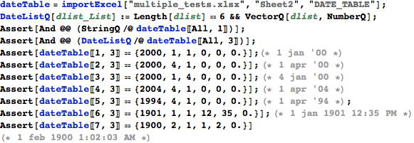
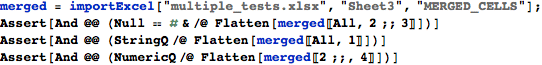

DataTricks : Validation Script
Unit test script. Timings were generated on a 2009 13” MBP laptop (2.2GHz) under Windows 7.
Range Tests
Cell ranges should be trimmed to the 'used' extent of the spreadsheet:

When a single range is specified directly (not as a list of lists), the range should not be given in a list:
The workbook should actually be evaluated (the saved cell values are not simply retrieved verbatim) when it is loaded. We can check this by retrieving ranges with random numbers multiple times. Deterministic columns (like Variable 1) should return the same values, but columns with random number formulas (like Variable 2) should be different with probability 1:
Should correctly read in a table range (which has the advantage of being a dynamic named range, so the dataset is always appropriately sized):

Data Type Tests
Check in-band error indicators are properly handled, and that values in the output have the right data types.
Dates should be presented as date Lists :

Even if decimal places are hidden in the spreadsheet view (as for Variable 3a), we should still retrieve the values to full precision:
Cells hidden by merging should show as 'Null':

Time Series Tests
Now we deal with time series observations, which are common in Economics. Data must be arranged in columns, and by default the reference dates are found in column A:
The retrieved data series must be in the correct format for DateListPlot, which is smart enough to drop non-numeric data.

Multiple time series at once, to produce a rather silly graph:

With a non-standard date column. Note the user forgot the dropHeaderRows option, but they were dropped automatically because the first four rows were not valid dates.
Data Refresh Tests
Variable 7 is saved pointing to an old version of the data. In the original, there is only about a year of data; in the updated version of the source data sheet there are much more data. So we should load different datasets, depending on whether we refresh or not.
Speed Tests on Typical Datasets
This dataset was designed to represent a spreadsheet of the size typically used to create graphs in Economics: 7 monthly series, each 18 years in length. Some series have a variety of errors and missing values, which are handled gracefully.
Import the whole sheet:
A subset of columns at a time:
Now, load an entire 5MB XLSX file.
And a subset of columns from this file :
Speed Tests on Large Datasets
This workbook contains a single, large dataset, 500 columns wide, with 10 header rows and 10000 data rows.
First, the 34MB XLSB file (note the built-in Import function does not even support XLSB files).
Now, the same tests on the 61MB XLSM file. XLSX files are larger and more complex, and so take longer to parse:
Now, how long to import all 5 million cells in the giant sheet?
Same again but for the 61MB XLSM sheet:
Invalid Input
Returns $Failed and outputs error messages when the user requests things wrongly. It should be pretty obvious what went wrong, but note that we don’t suppress exceptions raised by Excel here, in case the errors are actually due to something else we didn’t fully anticipate.


Attempting to import a file that does not exist :
Or if the sheet doesn' t exist.


Invalid range: